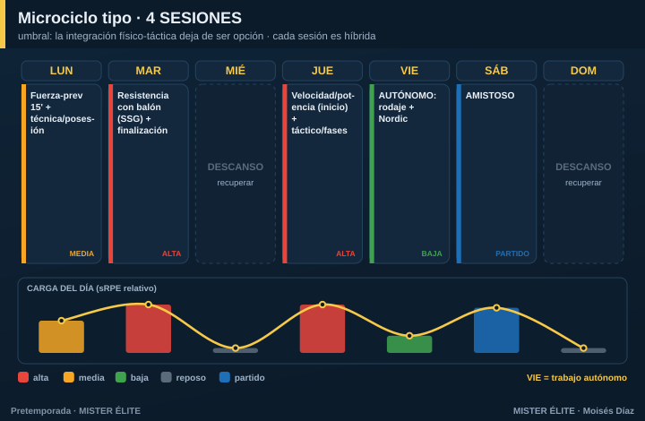

Plan · 4 SESIONES
Para quién: amateur con 4 sesiones por semana. Pretemporada: 6 semanas.
Principio rector: este es el umbral. Por debajo de aquí, la integración deja de ser opción y pasa a ser obligatoria. Ya no caben sesiones "puras" de un solo objetivo: cada sesión es híbrida (un dominante + una capacidad secundaria de mantenimiento). Y aparece el trabajo autónomo como pieza del plan, no como extra.
Microciclo tipo

- Lunes — fuerza-prevención 15' + técnica/posesión (carga media).
- Martes — pico: resistencia con balón (SSG) + finalización (carga alta).
- Jueves — velocidad/potencia al inicio (fresco) + táctico/fases de juego (carga alta).
- Viernes — autónomo: rodaje aeróbico + Nordic en casa (carga baja).
- Sábado — amistoso.
Las sesiones grupales reales son 4 (lunes, martes, jueves + el amistoso del sábado). El viernes es trabajo autónomo, no entrenamiento de grupo. Hay 48 h naturales entre los estímulos exigentes (martes y jueves), gracias al miércoles libre.
Cómo se reparte la carga
- Un pico claro (martes) y una sesión media-alta (jueves). Lunes de construcción, sábado competitivo.
- La condición física se "esconde" en los juegos reducidos con parámetros controlados (formato, espacio, densidad). Te ahorras el tiempo de "correr sin balón".
Fuerza, velocidad y prevención
- Fuerza en microdosis de 15-20' dos veces/semana (lunes y dentro del jueves).
- Velocidad SIEMPRE como primer bloque del día más fresco (jueves).
- Prevención en los calentamientos + el bloque autónomo del viernes.
Amistosos
1/semana, desde la semana 2-3.
Trabajo autónomo (clave en este nivel)
Prescribe 2 sesiones autónomas/semana en los días libres: - 1 rodaje aeróbico de 25-35' (mantiene la base que el grupo ya no alcanza). - 1 bloque de core + excéntricos de isquios (Nordic) en casa.
Sin este trabajo, con 4 sesiones grupales no llegas a la base aeróbica necesaria. Es parte del plan, no opcional.
Progresión por fases (6 semanas tipo)
| Semana | Fase | Énfasis físico (grupal) | Autónomo | Táctico | Amistoso |
|---|---|---|---|---|---|
| 1 | Acumulación | Base con balón + fuerza general | 2 rodajes 25' | Principios | Test / suave |
| 2 | Acumulación | Base + primer HIIT | 2 rodajes + Nordic | Subprincipios | 1 |
| 3 | Transformación | HIIT + inicio RSA | Rodaje + Nordic | Fases de juego, ABP | 2 |
| 4 | Transformación | RSA + velocidad | Nordic + movilidad | Automatismos | 3 |
| 5 | Realización | Velocidad/potencia | Reducir | Once tipo | Fuerte |
| 6 | Realización | Tapering | Mínimo | Plan de debut | Debut |